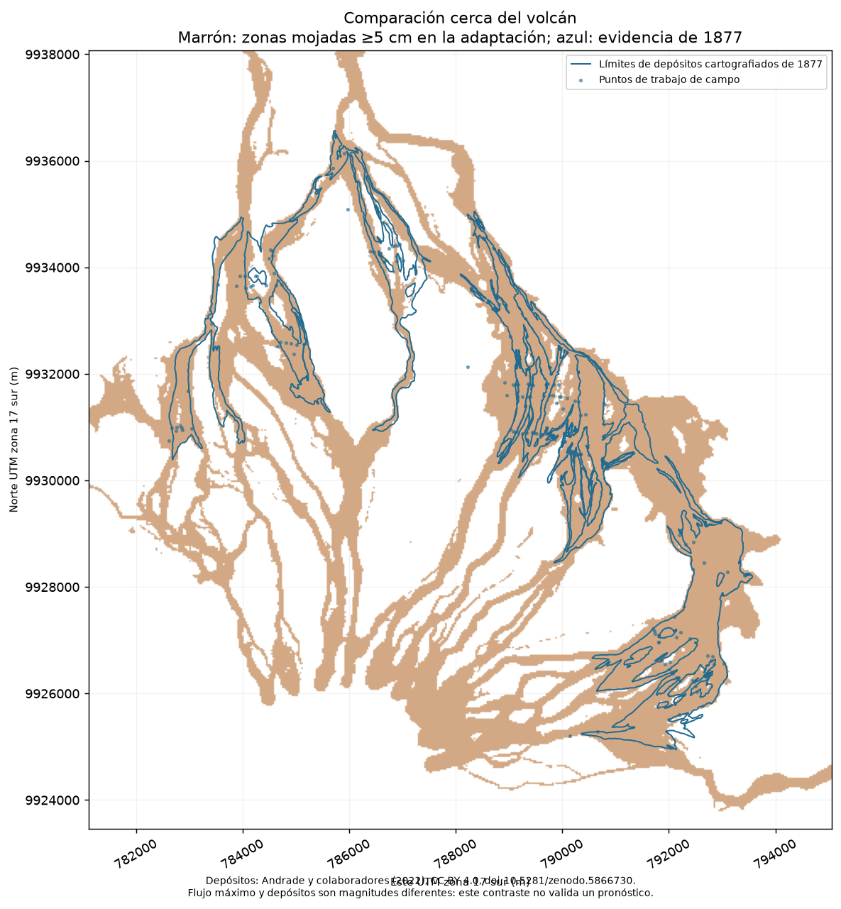

Adaptación exploratoria, sin validación predictiva local. Usa los nueve aportes de agua de un estudio publicado, con ubicaciones digitalizadas de su mapa y un terreno global de 30 m diferente del original. No es un pronóstico de erupción ni indica cuánto tiempo hay para evacuar.
| Dato | Resultado de esta corrida |
|---|---|
| Agua liberada en el flanco norte | 34.789 millones de m³, durante 15 minutos |
| Primera presencia de al menos 5 cm en el rectángulo Sangolquí–San Rafael | Entre 70.50 y 70.75 minutos desde los aportes en el Cotopaxi. |
| Mayor espesor muestreado dentro de ese rectángulo | 20.56 m, normal a la pendiente |
| Mayor velocidad muestreada con espesor de al menos5cm | 77.21 km/h (21.45 m/s) |
| Transporte estimado hacia el norte por la sección de comparación | 19.862 millones de m³ |
| Transporte neto por esa sección | 19.862 millones de m³ |
La sección está al sur del rectángulo y abarca los corredores de Pita y Santa Clara. La integral del paso por una sección no equivale a todo el material que entra en la ciudad ni al que queda en sus calles. El transporte positivo puede contar material que cruza más de una vez. Los límites del rectángulo no son los límites administrativos.
El máximo de espesor muestreado está en la celda centrada en -0.37386, -78.41781, a los 76.25 minutos. Su componente vertical es 20.37m. Es una celda de30m dentro del rectángulo, que incluye cañones; no describe una altura uniforme sobre la ciudad ni necesariamente una calle.
Los máximos de esta tabla corresponden a los601 estados revisados cada15 segundos; puede haber picos entre esas muestras. Que un resultado sea cero o no alcance el área en esta corrida no demuestra que el lugar sea seguro.

La corrida terminó los 150 minutos y se revisaron sus 601 estados, guardados cada 15 segundos. La diferencia máxima en el balance de volumen del flujo y del lecho fue menor del 0,001 % del aporte. La integral por sección cambió 0.000854 millones de m³ al usar datos cada 30 segundos. Esta comparación examina el muestreo temporal; no mide el error del terreno ni valida la predicción.
El escenario de agua y los parámetros físicos proceden de Vasconez y colaboradores (2025). La geometría de referencia del glaciar se basó en imágenes de 2020–2022, no en un levantamiento de 2026. Nuestro terreno Copernicus de 30 m puede incluir vegetación y edificios y no resuelve todos los cañones. Las fuentes se digitalizaron de una figura; faltan sus archivos GIS originales. El acondicionamiento de depresiones se limitó a elevaciones de hasta 2 m. Estas diferencias pueden cambiar alcance, velocidad y llegada.
Los tiempos de 52 minutos a Sangolquí y 60–84 minutos a San Rafael de Frimberger y colaboradores corresponden a otros escenarios y a RAMMS. Su figura 6 incluye velocidades históricas reconstruidas para calibrar 1877: 18 m/s en Jatabamba y 20 m/s en Proaño y Hacienda San Rafael. No se impusieron esos tiempos ni velocidades a esta animación. La corrección y validación local siguen pendientes de terreno fino y comparación en puntos equivalentes.
Se muestrearon las líneas transversales con coordenadas de Torres y Vásquez, EPN2017, tablas3.5,3.7 y4.2. Las llegadas de nuestra corrida cuentan desde las nueve fuentes del glaciar. El otro estudio utiliza diferentes entradas, terreno y propiedades del flujo. Sus velocidades máximas de FLOW-3D no son necesariamente la misma magnitud que la velocidad promediada en profundidad de Kestrel; esta tabla aporta contexto y no constituye una calibración.
| Sección | Primera presencia ≥5cm en esta corrida | Máxima velocidad muestreada de esta corrida | Referencia EPN2017, escenario3 |
|---|---|---|---|
| La Caldera · Pita | 50.25–50.50 min | 18.01 m/s | 22 m/s |
| La Caldera · Santa Clara | 53.25–53.50 min | 9.35 m/s | 20 m/s |
| Sangolquí · El Ejido | 88.00–88.25 min | 6.92 m/s | 9 m/s |
| Hacienda Megamaxi · Pita | 104.25–104.50 min | 6.42 m/s | 10 m/s |
Se obtuvieron 9.127 cotas numéricas válidas del MDT municipal. Sus diferencias frente al Copernicus varían según el lugar; el RMSE entre productos es de 10,30 m. No es una medida de precisión contra levantamientos de campo. Los perfiles muestran cauces que el terreno global suaviza. No se fusionaron cotas sin confirmar la referencia vertical y la resolución original del servicio. Consultar cada 5 m no convierte ese servicio en un MDT de resolución nativa de 5 m.

Comprobación del terreno municipal · Muestras de cota (CSV comprimido)
También se revisaron 14 polígonos de depósitos y 170 puntos de trabajo de campo publicados por Andrade y colaboradores (2022), CC BY 4.0. Cubren el tramo cercano al volcán. Los depósitos de 1877 no son la misma magnitud que el espesor máximo de un flujo hipotético con otra geometría del glaciar. Esta comparación espacial no es una puntuación de exactitud ni valida llegadas o velocidades en la ciudad.

Descargar caudal por tiempo (CSV) · Datos y comprobaciones (JSON) · Entradas y terreno · Metodología completa
Las construcciones son referencias visuales; no actúan como obstáculos ni se calculan daños estructurales.